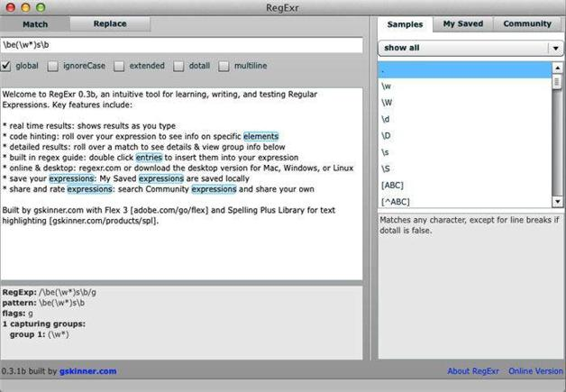

第2章 简单的模式匹配
正则表达式唯一的用途就是在文本中匹配和寻找模式，模式可以简单也可以复杂。本章将会介绍一些采用以下概念匹配模式的简单方法：
第1章我们使用了Steven Levithan的RegexPal演示了正则表达式的作用。本章我们将使用Grant Skinner的RegExr网站，网址为http://gskinner.com/RegExr（如图2-1所示）。

图2-1 在FireFox中打开Grant Skinner的RegExr
本书对正则表达式的讲解会逐步深入。在这个过程中，也希望你能逐步深入地理解正则表达式语法。我想说的是，当你遇到新事物时要主动尝试。尝试、失败、掌握、进步。通过实践来学习是不会有错的。
在深入学习之前，我们先看看RegExr为我们提供了什么好东东。在RegExr界面右上方有三个标签，请注意Samples和Community。Samples标签提供正则表达式语法方面的许多帮助信息，Community标签则展示了大量由别人提供且得到评分的正则表达式。这些标签中的很多信息可能对你非常有用。把鼠标放在RegExr的正则表达式或者目标文本上，就会弹出一些有用的信息。这些都是我非常喜欢RegExr这个在线正则表达式验证工具的原因。
本章以《抒情歌谣集》（Lyrical Ballads，London, J. & A. Arch, 1798）中收录的塞缪尔•泰勒•柯勒律治的一首诗“The Rime of the Ancient Mariner”为主要示例文本。接下来的几章中都会用到这首诗，开始是普通文本版，之后过渡到由HTML5标记的版本。该诗的全文保存在名为rime.txt的文件中；本章使用的rime-intro. txt文件只包括该诗的前几行。
以下几行是rime-intro.txt的内容:
THE RIME OF THE ANCYENT MARINERE, IN SEVEN PARTS.
ARGUMENT.
How a Ship having passed the Line was driven by Storms to the cold
Country towards the South Pole; and how from thence she made her course
to the tropical Latitude of the Great Pacific Ocean; and of the strange
things that befell; and in what manner the Ancyent Marinere came back to
his own Country.
I.
1 It is an ancyent Marinere,
2 And he stoppeth one of three:
3 "By thy long grey beard and thy glittering eye
4 "Now wherefore stoppest me?
将这些内容复制并粘贴到RegExr中下方的文本框中。可以在Github中找到rime-intro.txt文件，地址是https://github.com/michaeljamesfitzgerald/Introducing-Regular-Expressions；也可以在通过http://examples.oreilly.com/9781449392680/examples.zip下载到的压缩包中找到该文件。还可以在Project Gutenberg中找到这首诗在线文本，只是没有行号（参见http://www.gutenberg.org/ebooks/9622）。